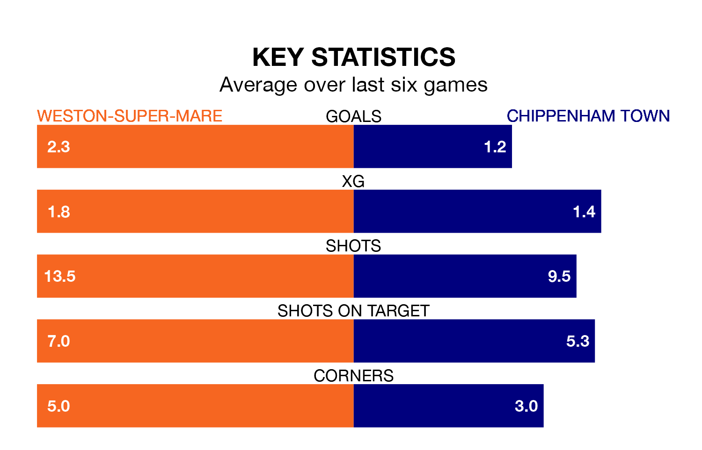

Weston-super-Mare welcome Chippenham Town to the Woodspring Stadium on late Tuesday looking to pick up points to end their three-game losing streak.
Weston-super-Mare's struggles have left them with nine points from their last six National League South matches, while their opponents have earned seven from a possible 18.
With 40 goals in 30 games so far this season, Chippenham are scoring at below the league average rate with 1.3 goals per game. But they are conceding fewer than average too, letting in 42 goals at a rate of 1.4 per game.
Weston-super-Mare, meanwhile, are average scorers, with 1.5 goals per game. They have conceded 1.7 goals per game.
Town are 17th in the table after 30 games, of which they have won nine and drawn 11, earning 38 points.
The home team are two places ahead of the visitors in 15th, with 11 wins and six draws putting them on 39 points.
Weston-super-Mare's last match was on December 26, a 3-2 loss against Weymouth.
Chippenham lost 2-1 against Bath City last time out, also on December 26.
Updated: 10:01 (UTC), 06/02/24